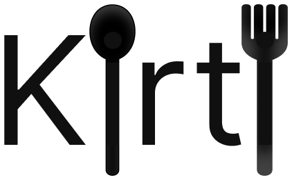

<!DOCTYPE html>
<html lang="ru">
<head>
<meta charset="UTF-8">
<meta name="viewport" content="width=device-width, initial-scale=1.0, maximum-scale=1.0, user-scalable=no, viewport-fit=cover">
<meta name="color-scheme" content="light">
<meta name="theme-color" content="#FFFFFF">
<title>Kirti</title>
<link rel="icon" type="image/png" href="img/icon.png">
<script src="https://telegram.org/js/telegram-web-app.js"></script>
<style>
  :root {
    --bg: #FFFFFF;
    --text: #222222;
    --muted: #6A6A6A;
    --line: #EBEBEB;
    --line-strong: #DDDDDD;
    --field: #B0B0B0;
    --surface: #F7F7F7;
    --accent: #FF385C;
    --danger: #C13515;
    --safe-top: calc(var(--tg-safe-area-inset-top, 0px) + var(--tg-content-safe-area-inset-top, 0px));
    --safe-bottom: calc(var(--tg-safe-area-inset-bottom, 0px) + env(safe-area-inset-bottom, 0px));
    color-scheme: light;
  }

  * { box-sizing: border-box; }
  html, body { margin: 0; padding: 0; }
  body {
    background: var(--bg);
    color: var(--text);
    font: 400 16px/1.5 -apple-system, BlinkMacSystemFont, "SF Pro Text", "Segoe UI", Roboto, "Helvetica Neue", Arial, "Noto Sans", "Noto Sans Hebrew", sans-serif;
    -webkit-font-smoothing: antialiased;
    -webkit-tap-highlight-color: transparent;
    -webkit-text-size-adjust: 100%;
  }
  button, input, select, textarea { font: inherit; color: inherit; }
  button { cursor: pointer; user-select: none; -webkit-user-select: none; touch-action: manipulation; }
  :focus-visible { outline: 2px solid var(--text); outline-offset: 2px; }
  .icon { width: 20px; height: 20px; flex: none; fill: none; stroke: currentColor; stroke-width: 2; stroke-linecap: round; stroke-linejoin: round; }
  [dir="rtl"] .flip { transform: scaleX(-1); }

  /* Press feedback: transform/opacity only, so it stays on the compositor */
  .btn, .tool, .round, .heart, .step-btn, .lang, .emoji, .tab, .cat, .card-open, .row-link {
    transition: transform 150ms ease-out, opacity 150ms ease-out;
  }
  .btn:active, .tool:active, .round:active, .heart:active, .step-btn:active, .lang:active, .emoji:active, .tab:active { transform: scale(0.94); }
  .cat:active { opacity: 0.6; }
  .card-open:active { transform: scale(0.985); }
  .row-link:active { opacity: 0.6; }

  .app {
    max-width: 720px;
    margin: 0 auto;
    padding: calc(var(--safe-top) + 12px) 20px calc(var(--safe-bottom) + 112px);
  }
  .app.hero-view { padding-top: 0; }
  /* Motion: transform and opacity only, so it runs on the compositor and stays smooth */
  :root { --ease: cubic-bezier(0.22, 1, 0.36, 1); }
  .view-in { animation: viewin 320ms var(--ease); }
  @keyframes viewin { from { opacity: 0; transform: translateY(16px); } }
  .view-in .card:nth-child(-n+6) { animation: rise 460ms var(--ease) backwards; }
  .view-in .card:nth-child(2) { animation-delay: 50ms; }
  .view-in .card:nth-child(3) { animation-delay: 100ms; }
  .view-in .card:nth-child(4) { animation-delay: 150ms; }
  .view-in .card:nth-child(5) { animation-delay: 200ms; }
  .view-in .card:nth-child(6) { animation-delay: 250ms; }
  @keyframes rise { from { opacity: 0; transform: translateY(28px) scale(0.97); } }
  .hero-view .view-in, .hero-view.view-in { animation: none; }
  .hero-view .view-in .hero img, .hero-view .view-in .hero .no-photo { animation: zoomout 700ms var(--ease); }
  @keyframes zoomout { from { transform: scale(1.12); } }
  .hero-view .view-in .sheet { animation: sheetup 520ms var(--ease); }
  @keyframes sheetup { from { transform: translateY(70px); opacity: 0; } }
  .hero-view .view-in .bottom-bar { animation: barup 420ms var(--ease) 120ms backwards; }
  @keyframes barup { from { transform: translateY(100%); } }
  .tabbar .tab.on .icon { animation: tabpop 360ms var(--ease); }
  @keyframes tabpop { 40% { transform: scale(1.22); } }
  .heart.pop .icon, .round.pop .icon { animation: heartpop 460ms var(--ease); }
  @keyframes heartpop { 0% { transform: scale(0.6); } 45% { transform: scale(1.35); } 100% { transform: scale(1); } }
  .step.just .step-num { animation: heartpop 420ms var(--ease); }

  h1 { font-size: 26px; line-height: 1.2; font-weight: 700; letter-spacing: -0.02em; margin: 0; }
  h2 { font-size: 22px; line-height: 1.25; font-weight: 600; letter-spacing: -0.01em; margin: 0 0 12px; }
  .sub { margin: 6px 0 0; color: var(--muted); font-size: 15px; }
  .top { margin-bottom: 16px; }
  .page-head { margin: 8px 0 24px; }

  /* Home header: logo, then a sticky search pill with the category bar */
  .topcover { position: fixed; top: 0; inset-inline: 0; height: var(--safe-top); background: var(--bg); z-index: 7; pointer-events: none; transition: opacity 150ms; }
  /* On the recipe page the photo may sit under the status bar until it scrolls away */
  .hero-view .topcover { opacity: 0; }
  body.scrolled .hero-view .topcover { opacity: 1; }
  .home-top { display: flex; align-items: center; justify-content: space-between; gap: 12px; margin-bottom: 4px; }
  .logo { display: block; height: 44px; width: auto; margin-inline-start: -4px; }
  .langs { display: inline-flex; border: 1px solid var(--line-strong); border-radius: 999px; padding: 3px; flex: none; }
  .lang { border: 0; background: transparent; border-radius: 999px; padding: 4px 10px; font-size: 12px; font-weight: 600; color: var(--muted); }
  .lang.on { background: var(--text); color: #fff; }

  .home-sticky {
    position: sticky; top: var(--safe-top); z-index: 4; background: var(--bg);
    margin: 0 -20px 24px; padding: 8px 20px 0; border-bottom: 1px solid var(--line);
  }
  .search {
    display: flex; align-items: center; gap: 12px; height: 56px; padding: 0 20px;
    background: #fff; border: 1px solid var(--line-strong); border-radius: 999px; box-shadow: 0 3px 10px rgba(0, 0, 0, 0.08);
  }
  .search .icon { width: 20px; height: 20px; stroke-width: 2.2; }
  .search input { flex: 1; min-width: 0; height: 100%; border: 0; padding: 0; background: transparent; outline: none; font-size: 15px; font-weight: 600; }
  .search input::placeholder { color: var(--muted); font-weight: 400; }
  .search input::-webkit-search-decoration { -webkit-appearance: none; }

  .cats { display: flex; gap: 28px; overflow-x: auto; margin: 12px -20px 0; padding: 0 20px; scrollbar-width: none; overscroll-behavior-x: contain; }
  .cats::-webkit-scrollbar { display: none; }
  .cat {
    position: relative; flex: none; display: flex; flex-direction: column; align-items: center; gap: 6px; padding: 6px 0 12px;
    border: 0; background: none; color: var(--muted); font-size: 12px; font-weight: 600; white-space: nowrap;
  }
  .cat .glyph { display: grid; place-items: center; height: 26px; font-size: 23px; line-height: 1; opacity: 0.7; }
  .cat .glyph .icon { width: 24px; height: 24px; stroke-width: 1.6; }
  .cat.on { color: var(--text); }
  .cat.on .glyph { opacity: 1; }
  .cat::after { content: ''; position: absolute; inset-inline: 0; bottom: 0; height: 2px; background: var(--text); opacity: 0; }
  .cat.on::after { opacity: 1; }

  /* Listing cards: one per row on phones, like the Airbnb feed */
  .feed { display: grid; grid-template-columns: minmax(0, 1fr); gap: 32px; }
  @media (min-width: 560px) { .feed { grid-template-columns: repeat(2, minmax(0, 1fr)); gap: 32px 16px; } }
  .card { position: relative; min-width: 0; }
  .card[hidden], .empty[hidden] { display: none; }
  .card-open { display: block; width: 100%; border: 0; padding: 0; background: none; text-align: start; }
  .card-photo { position: relative; display: block; aspect-ratio: 4 / 3; border-radius: 14px; overflow: hidden; background: var(--c, var(--surface)); }
  .card-photo img { position: absolute; inset: 0; width: 100%; height: 100%; object-fit: cover; }
  .no-photo { position: absolute; inset: 0; display: grid; place-items: center; font-size: 64px; background: var(--c, var(--surface)); }
  .card-badge {
    position: absolute; top: 12px; inset-inline-start: 12px; display: inline-flex; align-items: center; gap: 5px;
    background: #fff; border-radius: 999px; padding: 4px 10px; font-size: 12px; font-weight: 600; line-height: 1.4;
    box-shadow: 0 1px 2px rgba(0, 0, 0, 0.15);
  }
  .card-badge .icon { width: 14px; height: 14px; }
  .card-title {
    display: -webkit-box; margin-top: 12px; font-size: 15px; font-weight: 600; line-height: 1.3;
    overflow: hidden; -webkit-line-clamp: 2; -webkit-box-orient: vertical;
  }
  .card-meta { display: block; color: var(--muted); font-size: 15px; line-height: 1.35; margin-top: 2px; }
  .heart {
    position: absolute; top: 6px; inset-inline-end: 6px; width: 44px; height: 44px; border: 0; padding: 0; background: none;
    display: grid; place-items: center; color: #fff;
  }
  .heart .icon { width: 26px; height: 26px; stroke-width: 2; fill: rgba(0, 0, 0, 0.5); }
  .heart.on .icon { fill: var(--accent); }
  .empty { color: var(--muted); padding: 40px 0; margin: 0; text-align: center; }
  .empty p { margin: 0 0 20px; }

  /* Bottom tab bar */
  body.typing .tabbar { display: none; }
  .tabbar { position: fixed; inset-inline: 0; bottom: 0; z-index: 6; background: #fff; border-top: 1px solid var(--line); padding-bottom: var(--safe-bottom); }
  .tabbar[hidden] { display: none; }
  .tabbar .in { max-width: 520px; margin: 0 auto; display: flex; }
  .tab {
    flex: 1; display: flex; flex-direction: column; align-items: center; gap: 4px; padding: 9px 0 7px;
    border: 0; background: none; color: var(--muted); font-size: 11px; font-weight: 600; line-height: 1.2;
  }
  .tab .icon { width: 24px; height: 24px; stroke-width: 1.8; }
  .tab.on { color: var(--accent); }

  /* Add screen */
  .import-row { display: flex; gap: 8px; align-items: flex-end; }
  .import textarea {
    display: block; width: 100%; min-height: 52px; max-height: 160px; flex: 1; min-width: 0; resize: none; field-sizing: content;
    border: 1px solid var(--field); border-radius: 12px; padding: 14px; line-height: 1.4; background: #fff;
  }
  .import textarea:focus { outline: none; border-color: var(--text); box-shadow: inset 0 0 0 1px var(--text); }
  .import textarea::placeholder, .form ::placeholder { color: var(--muted); }
  .import .btn { flex: none; min-height: 52px; }
  .progress { display: flex; align-items: center; gap: 10px; margin-top: 14px; color: var(--muted); font-size: 15px; }
  .left { margin: 8px 2px 0; font-size: 13px; color: var(--muted); }
  .left.none { color: var(--accent); }
  .spinner { width: 18px; height: 18px; border-radius: 50%; border: 2px solid var(--line-strong); border-top-color: var(--text); animation: spin 0.9s linear infinite; }
  @keyframes spin { to { transform: rotate(360deg); } }
  .row-link {
    display: grid; grid-template-columns: 24px minmax(0, 1fr) 18px; gap: 16px; align-items: center; width: 100%;
    border: 0; border-bottom: 1px solid var(--line); background: none; padding: 18px 0; text-align: start;
  }
  .row-link .icon { width: 24px; height: 24px; stroke-width: 1.6; }
  .row-link .chev { width: 18px; height: 18px; color: var(--muted); }
  .row-link b { display: block; font-weight: 600; }
  .row-link small { display: block; color: var(--muted); font-size: 14px; line-height: 1.4; }

  /* Buttons */
  .btn {
    display: inline-flex; align-items: center; justify-content: center; gap: 8px;
    border: 0; border-radius: 10px; padding: 12px 22px; font-weight: 600; min-height: 48px;
  }
  .btn[disabled] { opacity: 0.4; }
  .btn-primary, .btn-dark { background: var(--text); color: #fff; }
  .btn-outline { background: #fff; border: 1px solid var(--text); color: var(--text); }
  .btn-soft { background: #fff; border: 1px solid var(--text); color: var(--text); }
  .btn-ghost { background: transparent; color: var(--text); text-decoration: underline; text-underline-offset: 3px; padding-inline: 4px; }
  .btn-danger { background: transparent; color: var(--danger); text-decoration: underline; text-underline-offset: 3px; padding-inline: 4px; }
  .link-btn { border: 0; background: none; padding: 0; color: var(--text); font-weight: 600; text-decoration: underline; text-underline-offset: 3px; }

  /* Recipe page */
  .hero { position: relative; margin: 0 -20px; width: calc(100% + 40px); aspect-ratio: 4 / 3; max-height: 60vh; overflow: hidden; background: var(--surface); }
  .hero img { position: absolute; inset: 0; width: 100%; height: 100%; object-fit: cover; }
  .hero .no-photo { font-size: 110px; }
  .hero-bar { position: absolute; top: calc(var(--safe-top) + 12px); inset-inline: 16px; display: flex; gap: 10px; }
  .hero-bar .spacer { flex: 1; }
  .round {
    position: relative;
    width: 36px; height: 36px; border-radius: 50%; border: 0; padding: 0; display: grid; place-items: center;
    background: #fff; color: var(--text); box-shadow: 0 1px 4px rgba(0, 0, 0, 0.18);
  }
  .round .icon { width: 18px; height: 18px; stroke-width: 2.2; }
  .round.on .icon { fill: var(--accent); stroke: var(--accent); }
  .sheet { position: relative; margin: -20px -20px 0; padding: 26px 20px 0; background: var(--bg); border-radius: 20px 20px 0 0; }
  .recipe-title { font-size: 26px; line-height: 1.2; font-weight: 700; letter-spacing: -0.02em; margin: 0; text-wrap: balance; }
  .recipe-sub { margin: 8px 0 0; color: var(--muted); font-size: 15px; }
  .divider { height: 1px; background: var(--line); margin: 24px 0; border: 0; }
  .highlights { display: grid; gap: 20px; }
  .hl { display: grid; grid-template-columns: 26px 1fr; gap: 16px; align-items: start; }
  .hl .icon { width: 26px; height: 26px; stroke-width: 1.5; }
  .hl b { display: block; font-weight: 600; }
  .hl span { display: block; color: var(--muted); font-size: 14px; }
  .tools { display: flex; gap: 10px; flex-wrap: wrap; }
  .tool {
    display: inline-flex; align-items: center; gap: 8px; border: 1px solid var(--text); background: #fff;
    border-radius: 8px; padding: 9px 14px; font-weight: 600; font-size: 14px;
  }
  .tool .icon { width: 18px; height: 18px; }
  .tool.on { background: var(--surface); }
  .translate { display: flex; gap: 8px; margin-top: 12px; flex-wrap: wrap; align-items: center; }
  .translate input { flex: 1 1 160px; min-width: 0; border: 1px solid var(--field); border-radius: 8px; padding: 12px 14px; }
  .translate .btn { min-height: 46px; }

  .section-head { display: flex; align-items: center; justify-content: space-between; gap: 12px; margin-bottom: 4px; }
  .section-head h2 { margin: 0; }
  .servings { display: inline-flex; align-items: center; gap: 8px; }
  .step-btn {
    width: 32px; height: 32px; border-radius: 50%; border: 1px solid var(--field); background: #fff; display: grid; place-items: center; padding: 0; color: var(--text);
  }
  .step-btn[disabled] { opacity: 0.3; }
  .step-btn .icon { width: 14px; height: 14px; stroke-width: 2.4; }
  .serv-val { min-width: 76px; text-align: center; font-weight: 600; font-size: 15px; }
  .ingr { list-style: none; margin: 0; padding: 0; }
  .ingr li { display: flex; justify-content: space-between; gap: 16px; padding: 14px 0; border-bottom: 1px solid var(--line); }
  .ingr li:last-child { border-bottom: 0; }
  .ingr b { font-weight: 600; white-space: nowrap; }
  .steps { list-style: none; margin: 0; padding: 0; }
  .step { display: grid; grid-template-columns: 28px 1fr; gap: 14px; padding: 16px 0; border-bottom: 1px solid var(--line); cursor: pointer; }
  .step:last-child { border-bottom: 0; }
  .step-num {
    width: 28px; height: 28px; border-radius: 50%; border: 1.5px solid var(--text); display: grid; place-items: center;
    font-weight: 600; font-size: 13px;
  }
  .step-num .icon { width: 15px; height: 15px; stroke-width: 3; }
  .step.done .step-num { background: var(--text); color: #fff; }
  .step.done .step-text { color: var(--muted); text-decoration: line-through; text-decoration-thickness: 1px; }
  .step-text { padding-top: 2px; }
  .end-actions { display: flex; flex-wrap: wrap; gap: 8px; justify-content: space-between; align-items: center; }

  /* Sticky bar with the link to the original, like Airbnb's Reserve bar */
  .bottom-bar {
    position: fixed; inset-inline: 0; bottom: 0; z-index: 6; background: #fff; border-top: 1px solid var(--line);
    padding: 12px 20px calc(var(--safe-bottom) + 12px);
  }
  .bottom-bar .in { max-width: 680px; margin: 0 auto; display: flex; align-items: center; justify-content: space-between; gap: 16px; }
  .bottom-bar .src { min-width: 0; }
  .bottom-bar .btn { flex: none; white-space: nowrap; }
  .bottom-bar .src b { display: block; font-weight: 600; }
  .bottom-bar .src span { display: block; color: var(--muted); font-size: 14px; overflow: hidden; text-overflow: ellipsis; white-space: nowrap; }

  /* Forms */
  .head { margin-bottom: 24px; }
  .form { display: grid; gap: 18px; }
  .form label, .field-title { display: grid; gap: 8px; color: var(--text); font-size: 14px; font-weight: 600; margin: 0; }
  .form input, .form select, .form textarea {
    width: 100%; border: 1px solid var(--field); background: #fff; border-radius: 8px; padding: 13px 14px; color: var(--text); font-weight: 400;
  }
  .form input:focus, .form select:focus, .form textarea:focus { outline: none; border-color: var(--text); box-shadow: inset 0 0 0 1px var(--text); }
  .row2 { display: grid; grid-template-columns: 1fr 1fr; gap: 12px; }
  .ingr-set { border: 0; padding: 0; margin: 0; display: grid; gap: 8px; }
  .ingr-set legend { font-size: 14px; font-weight: 600; margin-bottom: 8px; }
  .ing-row { display: grid; grid-template-columns: 1fr 72px 64px 36px; gap: 6px; }
  .btn-remove { border: 0; background: transparent; color: var(--muted); display: grid; place-items: center; padding: 0; }
  .photo-box { display: grid; gap: 10px; }
  .photo-preview { width: 100%; max-height: 260px; object-fit: cover; border-radius: 12px; }
  .emoji-grid { display: grid; grid-template-columns: repeat(8, 1fr); gap: 6px; }
  .emoji { border: 1px solid var(--line-strong); background: #fff; border-radius: 10px; font-size: 22px; aspect-ratio: 1; padding: 0; }
  .emoji.on { border-color: var(--text); box-shadow: inset 0 0 0 1px var(--text); }
  .actions { display: grid; gap: 10px; margin-top: 8px; }
  .error { color: var(--danger); margin: 10px 0 0; font-size: 15px; }

  /* Small round controls keep their look but get a 44px tap area */
  .step-btn, .lang, .btn-remove { position: relative; }
  .round::before, .step-btn::before, .lang::before, .btn-remove::before { content: ''; position: absolute; inset: -6px; }
  .lang::before { inset: -9px -2px; }

  @media (prefers-reduced-motion: reduce) {
    *, *::before, *::after { animation: none !important; transition: none !important; }
    .spinner { animation: spin 3s linear infinite !important; }
    *:active { transform: none !important; }
  }
</style>
</head>
<body>
<main class="app" id="app"></main>
<nav class="tabbar" id="tabbar" hidden></nav>

<script>
  const tg = window.Telegram && window.Telegram.WebApp;
  const BG = '#FFFFFF';
  if (tg) {
    tg.ready();
    tg.expand();
    try {
      if (tg.isVersionAtLeast('8.0') && ['ios', 'android'].includes(tg.platform)) tg.requestFullscreen();
      if (tg.isVersionAtLeast('7.7')) tg.disableVerticalSwipes();
      tg.setHeaderColor(BG);
      tg.setBackgroundColor(BG);
      if (tg.setBottomBarColor) tg.setBottomBarColor(BG);
    } catch (e) {
      // older Telegram clients lack some of these; the app works without them
    }
  }
  // Telegram draws its own back button; the page shows one only in a plain browser
  const OWN_BACK = !(tg && tg.BackButton && tg.isVersionAtLeast && tg.isVersionAtLeast('6.1'));
  const VIDEO_LINK = /(youtube\.com|youtu\.be|tiktok\.com|instagram\.com|facebook\.com|fb\.watch|t\.me)\//i;
  const OLD_BOT_CAT = 'Из бота';

  const KEY = 'recipe-book-v1';
  const DONE_KEY = 'recipe-book-done-v1';
  const CATS_KEY = 'recipe-book-cats-v1';
  const OFFERED_KEY = 'recipe-book-offered-v1';
  const MAX_PHOTO = 640; // px on the longest side; keeps localStorage usage small
  const BOT_USERNAME = 'recipe4katyabot'; // username бота без @; пока пусто, кнопка не показывается
  const API = 'https://recipe-book-tma.vercel.app';
  const IMPORTED_KEY = 'recipe-book-imported-v1';
  // Gemini does not report its quota, so imports are counted here per day (shortcut: per device, not per account)
  const IMPORT_LIMIT = 20;
  const IMPORT_KEY = 'recipe-book-imports-v1';
  const today = () => new Date().toISOString().slice(0, 10);
  const importsLeft = () => {
    const u = readJSON(IMPORT_KEY, {});
    return Math.max(0, IMPORT_LIMIT - (u.day === today() ? u.n : 0));
  };
  const countImport = () => writeJSON(IMPORT_KEY, { day: today(), n: IMPORT_LIMIT - importsLeft() + 1 });
  const LANG_KEY = 'recipe-book-lang-v1';
  // Suggestions only: any language name typed in the field is sent to Claude
  const LANGS = ['English', 'Русский', 'עברית', 'العربية', 'Українська', 'Español', 'Français', 'Deutsch', 'Italiano',
    'Português', 'Polski', 'Türkçe', 'Ελληνικά', 'Nederlands', 'Svenska', 'Čeština', 'Română', 'Magyar', 'Български',
    'Српски', 'ქართული', 'Հայերեն', 'Қазақша', 'Oʻzbekcha', 'فارسی', 'हिन्दी', '中文', '日本語', '한국어', 'Tiếng Việt',
    'ไทย', 'Bahasa Indonesia'];

  const CATEGORIES = [
    { name: 'Выпечка', icon: '🥐', color: '#F6E3C6' },
    { name: 'Супы', icon: '🍲', color: '#DDEBD6' },
    { name: 'Горячее', icon: '🍗', color: '#F7D6C2' },
    { name: 'Салаты', icon: '🥗', color: '#D6EBCF' },
    { name: 'Десерты', icon: '🍰', color: '#F4D9E1' }
  ];

  // Colors for user-made categories, used in order
  const PALETTE = ['#E3E8F6', '#F6F0C6', '#D9EEF0', '#EBDDF2', '#F6DCDC', '#E2F0DC'];
  const CAT_ICONS = ['🍽️', '🍕', '🍔', '🌮', '🥞', '🧁', '🍩', '🍪', '🥩', '🍣', '🍜', '🥘', '🥦', '🥕', '🍄', '🧀', '🥚', '🍓', '🍎', '🍇', '🥤', '☕', '🍹', '🥪'];

  const SEED = [
    {
      title: 'Блины',
      photo: 'img/blini.jpg',
      category: 'Выпечка',
      time: 35,
      baseServings: 4,
      ingredients: [
        { name: 'Молоко', amount: '500', unit: 'мл' },
        { name: 'Яйца', amount: '2', unit: 'шт' },
        { name: 'Мука пшеничная', amount: '250', unit: 'г' },
        { name: 'Сахар', amount: '1', unit: 'ст. л.' },
        { name: 'Соль', amount: '1', unit: 'щепотка' },
        { name: 'Растительное масло', amount: '4', unit: 'ст. л.' }
      ],
      steps: [
        'Взбейте яйца с сахаром и солью.',
        'Влейте половину молока и перемешайте.',
        'Постепенно добавляйте муку, помешивая, чтобы не было комков.',
        'Влейте оставшееся молоко и масло. Тесто должно быть жидким.',
        'Дайте тесту постоять 15 минут.',
        'Смажьте хорошо разогретую сковороду 1 ст. л. растительного масла и жарьте по минуте с каждой стороны.'
      ]
    },
    {
      title: 'Борщ',
      photo: 'img/borsch.jpg',
      category: 'Супы',
      time: 150,
      baseServings: 4,
      ingredients: [
        { name: 'Говядина на кости', amount: '500', unit: 'г' },
        { name: 'Свёкла', amount: '2', unit: 'шт' },
        { name: 'Картофель', amount: '3', unit: 'шт' },
        { name: 'Капуста белокочанная', amount: '300', unit: 'г' },
        { name: 'Морковь', amount: '1', unit: 'шт' },
        { name: 'Лук репчатый', amount: '1', unit: 'шт' },
        { name: 'Томатная паста', amount: '2', unit: 'ст. л.' },
        { name: 'Чеснок', amount: '2', unit: 'зубчика' },
        { name: 'Соль', amount: 'по вкусу', unit: '' },
        { name: 'Зелень', amount: 'по вкусу', unit: '' }
      ],
      steps: [
        'Отварите мясо в 2 литрах воды около 1,5 часов, снимая пену.',
        'Нарежьте картофель и добавьте в бульон.',
        'Натрите свёклу и морковь, нарежьте лук. Обжарьте всё с томатной пастой 5 минут.',
        'Добавьте в бульон капусту. Через 10 минут добавьте зажарку.',
        'Варите ещё 10 минут, добавьте чеснок, соль и зелень.'
      ]
    },
    {
      title: 'Салат «Оливье»',
      photo: 'img/olivier.jpg',
      category: 'Салаты',
      time: 40,
      baseServings: 4,
      ingredients: [
        { name: 'Картофель', amount: '3', unit: 'шт' },
        { name: 'Морковь', amount: '1', unit: 'шт' },
        { name: 'Яйца', amount: '3', unit: 'шт' },
        { name: 'Колбаса варёная', amount: '250', unit: 'г' },
        { name: 'Огурцы солёные', amount: '2', unit: 'шт' },
        { name: 'Горошек зелёный', amount: '1', unit: 'банка' },
        { name: 'Майонез', amount: '150', unit: 'г' },
        { name: 'Соль', amount: 'по вкусу', unit: '' }
      ],
      steps: [
        'Отварите картофель, морковь и яйца до готовности. Остудите.',
        'Нарежьте все ингредиенты кубиками примерно 1 см.',
        'Смешайте в большой миске, добавьте горошек без жидкости.',
        'Заправьте майонезом, посолите и аккуратно перемешайте.'
      ]
    },
    {
      title: 'Шарлотка',
      photo: 'img/sharlotka.jpg',
      category: 'Десерты',
      time: 70,
      baseServings: 6,
      ingredients: [
        { name: 'Яйца', amount: '4', unit: 'шт' },
        { name: 'Сахар', amount: '200', unit: 'г' },
        { name: 'Мука пшеничная', amount: '200', unit: 'г' },
        { name: 'Яблоки', amount: '4', unit: 'шт' },
        { name: 'Сливочное масло', amount: '50', unit: 'г' },
        { name: 'Разрыхлитель', amount: '1', unit: 'ч. л.' },
        { name: 'Соль', amount: '1', unit: 'щепотка' }
      ],
      steps: [
        'Взбейте яйца с сахаром и солью до пышной массы.',
        'Аккуратно введите муку с разрыхлителем.',
        'Яблоки очистите и нарежьте дольками.',
        'Смажьте форму маслом, выложите яблоки и залейте тестом.',
        'Выпекайте при 180 °C около 40 минут. Проверьте деревянной палочкой.'
      ]
    },
    {
      title: 'Окрошка',
      category: 'Супы',
      time: 40,
      baseServings: 4,
      ingredients: [
        { name: 'Картофель', amount: '3', unit: 'шт' },
        { name: 'Яйца', amount: '2', unit: 'шт' },
        { name: 'Огурцы свежие', amount: '2', unit: 'шт' },
        { name: 'Редис', amount: '6', unit: 'шт' },
        { name: 'Колбаса варёная', amount: '200', unit: 'г' },
        { name: 'Зелёный лук', amount: '1', unit: 'пучок' },
        { name: 'Укроп', amount: '1', unit: 'пучок' },
        { name: 'Квас', amount: '1,5', unit: 'л' },
        { name: 'Сметана', amount: '200', unit: 'г' },
        { name: 'Соль', amount: 'по вкусу', unit: '' }
      ],
      steps: [
        'Отварите картофель и яйца, остудите и нарежьте кубиками.',
        'Нарежьте огурцы, редис, колбасу и зелень.',
        'Смешайте все продукты в кастрюле.',
        'Залейте квасом, добавьте сметану и посолите. Подавайте холодной.'
      ]
    },
    {
      title: 'Куриные котлеты',
      category: 'Горячее',
      time: 45,
      baseServings: 4,
      ingredients: [
        { name: 'Куриный фарш', amount: '500', unit: 'г' },
        { name: 'Лук репчатый', amount: '1', unit: 'шт' },
        { name: 'Белый хлеб', amount: '2', unit: 'ломтика' },
        { name: 'Молоко', amount: '100', unit: 'мл' },
        { name: 'Яйцо', amount: '1', unit: 'шт' },
        { name: 'Соль', amount: '1', unit: 'ч. л.' },
        { name: 'Перец чёрный молотый', amount: 'по вкусу', unit: '' },
        { name: 'Растительное масло', amount: '3', unit: 'ст. л.' }
      ],
      steps: [
        'Замочите хлеб в молоке на 5 минут, затем отожмите.',
        'Мелко нарубите или натрите лук.',
        'Смешайте фарш, лук, хлеб, яйцо, соль и перец. Сформируйте котлеты.',
        'Обжаривайте на среднем огне по 4–5 минут с каждой стороны.',
        'Накройте крышкой и доведите до готовности ещё около 10 минут.'
      ]
    },
    {
      title: 'Греческий салат',
      category: 'Салаты',
      time: 15,
      baseServings: 4,
      ingredients: [
        { name: 'Помидоры', amount: '3', unit: 'шт' },
        { name: 'Огурцы', amount: '2', unit: 'шт' },
        { name: 'Перец болгарский', amount: '1', unit: 'шт' },
        { name: 'Красный лук', amount: '0,5', unit: 'шт' },
        { name: 'Сыр фета', amount: '150', unit: 'г' },
        { name: 'Маслины без косточек', amount: '100', unit: 'г' },
        { name: 'Оливковое масло', amount: '3', unit: 'ст. л.' },
        { name: 'Орегано сушёный', amount: '1', unit: 'ч. л.' },
        { name: 'Соль', amount: 'по вкусу', unit: '' }
      ],
      steps: [
        'Нарежьте помидоры, огурцы и перец крупными кусками.',
        'Лук нарежьте тонкими полукольцами.',
        'Выложите овощи в миску и добавьте маслины.',
        'Сверху положите фету целым куском, полейте маслом, посыпьте орегано и посолите.'
      ]
    },
    {
      title: 'Панна котта',
      category: 'Десерты',
      time: 20,
      baseServings: 4,
      ingredients: [
        { name: 'Сливки 33%', amount: '400', unit: 'мл' },
        { name: 'Сахар', amount: '60', unit: 'г' },
        { name: 'Ванильный сахар', amount: '1', unit: 'пакетик' },
        { name: 'Желатин', amount: '10', unit: 'г' },
        { name: 'Греческий йогурт', amount: '150', unit: 'г' }
      ],
      steps: [
        'Замочите желатин в 3 ст. л. холодной воды на 10 минут.',
        'Нагрейте сливки с сахаром и ванильным сахаром, не доводя до кипения.',
        'Добавьте желатин и размешайте до полного растворения.',
        'Остудите немного, смешайте с йогуртом и разлейте по формочкам.',
        'Уберите в холодильник минимум на 4 часа.'
      ]
    }
  ];

  const state = {
    importText: '',
    importing: '', // progress text while an import runs
    importError: '',
    showTranslate: false,
    translation: null, // { id, lang, recipe } for the recipe on screen; kept in memory only
    translating: false,
    translateError: '',
    view: 'home',
    history: [],
    category: '',
    query: '',
    recipeId: '',
    editingId: '',
    servings: 4,
    draft: null,
    error: '',
    confirmDelete: false
  };

  let recipes = [];
  let done = {};
  let customCats = [];
  let lastView = '';
  let lastRecipe = '';

  const app = document.getElementById('app');

  function uid() {
    return Date.now().toString(36) + Math.random().toString(36).slice(2, 7);
  }

  function esc(value) {
    return String(value ?? '').replace(/[&<>"']/g, c => ({
      '&': '&amp;', '<': '&lt;', '>': '&gt;', '"': '&quot;', "'": '&#39;'
    })[c]);
  }

  function readJSON(key, fallback) {
    try {
      const value = JSON.parse(localStorage.getItem(key));
      return value ?? fallback;
    } catch (e) {
      return fallback;
    }
  }

  function writeJSON(key, value) {
    try {
      localStorage.setItem(key, JSON.stringify(value));
      return true;
    } catch (e) {
      return false;
    }
  }


  const UI_LANG_KEY = 'recipe-book-ui-lang-v1';
  // Interface texts; recipe content itself is translated on demand through Claude
  const I18N = {
    ru: {
      langName: 'Русский',
      allCats: 'Все', ingrCount: 'ингр.', stepsCount: 'шагов', video: 'Видео', openVideo: 'Смотреть видео', openPage: 'Открыть оригинал', sourceTitle: 'Оригинал',
      sourceLabel: 'Ссылка на оригинал (видео или сайт)', errSource: 'Ссылка должна начинаться с https://',
      importLeft: (n) => `Осталось импортов сегодня: ${n} из ${IMPORT_LIMIT}`,
      importNone: 'Лимит импортов на сегодня закончился. Завтра снова будет 20.',
      importSub: 'Ссылка на видео, сайт или текст. ИИ разберёт рецепт сам.',
      timeTitle: 'Время приготовления', servTitle: 'Порций по рецепту', aiSub: 'Рецепт собран нейросетью, проверьте количества',
      importTitle: 'Добавить рецепт', importPh: 'Вставьте ссылку',
      importBtn: 'Добавить', importing: 'Читаю рецепт…', importingVideo: 'Смотрю видео, это займёт до минуты…',
      importFailed: 'Рецепт не нашёлся. Проверьте ссылку или вставьте текст рецепта.',
      importYoutube: 'YouTube не открыл это видео. Скопируйте описание ролика и вставьте его сюда.',
      importOnlyTg: 'Импорт работает, когда приложение открыто в Telegram.', importEmpty: 'Вставьте ссылку или текст рецепта.',
      chatHint: 'Фото и видеофайлы присылайте боту в чат.', aiBadge: 'Импортировано через ИИ', estimate: 'примерно',
      noRecipes: 'Рецептов пока нет. Добавьте первый.', tabRecipes: 'Рецепты', tabAdd: 'Добавить', aiShort: 'ИИ', manualTitle: 'Написать вручную', manualSub: 'Название, фото, ингредиенты и шаги', addCategory: 'Категория', appTitle: 'Kirti', appSub: 'Любимые рецепты в одном месте',
      search: 'Поиск по названию или ингредиенту', nothing: 'Ничего не нашлось. Попробуйте другое слово.',
      botHintTitle: 'Добавить рецепт из Telegram.',
      botHint: 'Отправьте боту ссылку на рецепт, скриншот, фото или видео, или напишите рецепт текстом. Бот пришлёт черновик, и вы подтвердите его перед сохранением.',
      openBot: 'Открыть чат с ботом', favs: 'Избранное', count: n => `Рецептов: ${n}`, recShort: n => `${n} рец.`,
      favsEmpty: 'Нажмите на сердечко у рецепта, и он появится здесь.', addRecipe: '+ Добавить новый рецепт',
      newCat: '+ Новая категория', catEmpty: 'В этой категории пока нет рецептов.', emoji: 'Эмодзи',
      newCatTitle: 'Новая категория', name: 'Название', catNamePh: 'Например, Закуски', createCat: 'Создать категорию',
      cancel: 'Отмена', translated: lang => `Перевод: ${lang}`, showOriginal: 'Показать оригинал',
      langPh: 'Язык, например English', langAria: 'Язык перевода', translating: 'Перевожу…', translate: 'Перевести',
      ingredients: 'Ингредиенты', servLess: 'Меньше порций', servMore: 'Больше порций', cooking: 'Приготовление',
      resetDone: 'Сбросить отметки', inFav: 'В избранном', toFav: 'В избранное', edit: 'Редактировать',
      confirmDelete: 'Точно удалить?', deleteRecipe: 'Удалить рецепт', product: 'Продукт', amountPh: 'Кол-во',
      unitPh: 'Ед.', ingName: 'Название ингредиента', amount: 'Количество', unit: 'Единица измерения',
      removeRow: 'Удалить строку', editing: 'Редактирование', newRecipe: 'Новый рецепт', recipeNamePh: 'Например, Блины',
      photo: 'Фото', photoAlt: 'Фото рецепта', noPhoto: 'Фото пока не добавлено', replacePhoto: 'Заменить фото',
      addPhoto: 'Добавить фото', removePhoto: 'Убрать фото', category: 'Категория', timeMin: 'Время, мин',
      servingsLabel: 'Порций', addIngredient: '+ Добавить ингредиент', stepsPh: 'Каждый шаг — с новой строки',
      save: 'Сохранить', back: 'Назад', noTime: 'время не указано', h: 'ч', min: 'мин',
      portions: n => {
        const m10 = n % 10, m100 = n % 100;
        if (m10 === 1 && m100 !== 11) return 'порция';
        if (m10 >= 2 && m10 <= 4 && (m100 < 12 || m100 > 14)) return 'порции';
        return 'порций';
      },
      errTitle: 'Введите название рецепта.', errTitleLong: 'Название не длиннее 80 символов.', errCat: 'Выберите категорию.',
      errTime: 'Время укажите целым числом минут.', errServ: 'Порций должно быть не меньше одной.',
      errIngr: 'Добавьте хотя бы один ингредиент.', errSteps: 'Опишите приготовление.',
      errCatName: 'Введите название категории.', errCatLong: 'Название категории не длиннее 30 символов.',
      errCatExists: 'Такая категория уже есть.', errEmoji: 'Выберите эмодзи.',
      errStorage: 'Не удалось сохранить: не хватает места в хранилище. Уберите фото у других рецептов.',
      errCatStorage: 'Не удалось сохранить категорию: не хватает места в хранилище.',
      errLang: 'Выберите язык.', errOnlyTg: 'Перевод работает только внутри Telegram.',
      errTranslate: 'Не удалось перевести. Попробуйте ещё раз.', errPhotoFile: 'Не удалось открыть фото. Выберите другой файл.',
      cats: { 'Выпечка': 'Выпечка', 'Супы': 'Супы', 'Горячее': 'Горячее', 'Салаты': 'Салаты', 'Десерты': 'Десерты', 'Из бота': 'Из бота' }
    },
    en: {
      langName: 'English',
      allCats: 'All', ingrCount: 'ingr.', stepsCount: 'steps', video: 'Video', openVideo: 'Watch video', openPage: 'Open original', sourceTitle: 'Original',
      sourceLabel: 'Link to the original (video or website)', errSource: 'The link must start with https://',
      importLeft: (n) => `Imports left today: ${n} of ${IMPORT_LIMIT}`,
      importNone: 'No imports left today. You get 20 again tomorrow.',
      importSub: 'A video or website link, or the text. AI does the rest.',
      timeTitle: 'Cooking time', servTitle: 'Servings in the recipe', aiSub: 'Put together by AI, check the amounts',
      importTitle: 'Add a recipe', importPh: 'Paste a link',
      importBtn: 'Add', importing: 'Reading the recipe…', importingVideo: 'Watching the video, this takes up to a minute…',
      importFailed: 'No recipe found. Check the link or paste the recipe text.',
      importYoutube: 'YouTube would not open this video. Copy the video description and paste it here.',
      importOnlyTg: 'Import works when the app is opened in Telegram.', importEmpty: 'Paste a link or the recipe text.',
      chatHint: 'Send photos and video files to the bot in the chat.', aiBadge: 'Imported with AI', estimate: 'estimated',
      noRecipes: 'No recipes yet. Add the first one.', tabRecipes: 'Recipes', tabAdd: 'Add', aiShort: 'AI', manualTitle: 'Write it yourself', manualSub: 'Name, photo, ingredients and steps', addCategory: 'Category', appTitle: 'Kirti', appSub: 'Favorite recipes in one place',
      search: 'Search by name or ingredient', nothing: 'Nothing found. Try another word.',
      botHintTitle: 'Add a recipe from Telegram.',
      botHint: 'Send the bot a recipe link, a screenshot, a photo or a video, or type the recipe. The bot sends a draft, and you confirm it before saving.',
      openBot: 'Open chat with the bot', favs: 'Favorites', count: n => `Recipes: ${n}`, recShort: n => (n === 1 ? '1 recipe' : `${n} recipes`),
      favsEmpty: 'Tap the heart on a recipe and it will show up here.', addRecipe: '+ Add a new recipe',
      newCat: '+ New category', catEmpty: 'No recipes in this category yet.', emoji: 'Emoji',
      newCatTitle: 'New category', name: 'Name', catNamePh: 'For example, Snacks', createCat: 'Create category',
      cancel: 'Cancel', translated: lang => `Translation: ${lang}`, showOriginal: 'Show original',
      langPh: 'Language, for example Hebrew', langAria: 'Translation language', translating: 'Translating…', translate: 'Translate',
      ingredients: 'Ingredients', servLess: 'Fewer servings', servMore: 'More servings', cooking: 'Directions',
      resetDone: 'Clear checkmarks', inFav: 'In favorites', toFav: 'Favorite', edit: 'Edit',
      confirmDelete: 'Delete for sure?', deleteRecipe: 'Delete recipe', product: 'Item', amountPh: 'Qty',
      unitPh: 'Unit', ingName: 'Ingredient name', amount: 'Amount', unit: 'Unit',
      removeRow: 'Remove row', editing: 'Editing', newRecipe: 'New recipe', recipeNamePh: 'For example, Pancakes',
      photo: 'Photo', photoAlt: 'Recipe photo', noPhoto: 'No photo yet', replacePhoto: 'Replace photo',
      addPhoto: 'Add photo', removePhoto: 'Remove photo', category: 'Category', timeMin: 'Time, min',
      servingsLabel: 'Servings', addIngredient: '+ Add ingredient', stepsPh: 'One step per line',
      save: 'Save', back: 'Back', noTime: 'no time given', h: 'h', min: 'min',
      portions: n => (n === 1 ? 'serving' : 'servings'),
      errTitle: 'Enter a recipe name.', errTitleLong: 'The name must be 80 characters or less.', errCat: 'Choose a category.',
      errTime: 'Enter the time as whole minutes.', errServ: 'There must be at least one serving.',
      errIngr: 'Add at least one ingredient.', errSteps: 'Describe the directions.',
      errCatName: 'Enter a category name.', errCatLong: 'The category name must be 30 characters or less.',
      errCatExists: 'This category already exists.', errEmoji: 'Choose an emoji.',
      errStorage: 'Could not save: storage is full. Remove photos from other recipes.',
      errCatStorage: 'Could not save the category: storage is full.',
      errLang: 'Choose a language.', errOnlyTg: 'Translation works only inside Telegram.',
      errTranslate: 'Could not translate. Please try again.', errPhotoFile: 'Could not open the photo. Choose another file.',
      cats: { 'Выпечка': 'Baking', 'Супы': 'Soups', 'Горячее': 'Main dishes', 'Салаты': 'Salads', 'Десерты': 'Desserts', 'Из бота': 'From the bot' }
    },
    he: {
      langName: 'עברית',
      allCats: 'הכול', ingrCount: 'מצרכים', stepsCount: 'שלבים', video: 'סרטון', openVideo: 'צפייה בסרטון', openPage: 'פתיחת המקור', sourceTitle: 'המקור',
      sourceLabel: 'קישור למקור (סרטון או אתר)', errSource: 'הקישור צריך להתחיל ב-https://',
      importLeft: (n) => `נשארו ייבואים להיום: ${n} מתוך ${IMPORT_LIMIT}`,
      importNone: 'נגמרו הייבואים להיום. מחר יהיו 20 שוב.',
      importSub: 'קישור לסרטון, לאתר או טקסט. ה-AI יעשה את השאר.',
      timeTitle: 'זמן הכנה', servTitle: 'מנות במתכון', aiSub: 'נאסף על ידי AI, בדקו את הכמויות',
      importTitle: 'הוספת מתכון', importPh: 'הדביקו קישור',
      importBtn: 'הוספה', importing: 'קורא את המתכון…', importingVideo: 'צופה בסרטון, זה ייקח עד דקה…',
      importFailed: 'לא נמצא מתכון. בדקו את הקישור או הדביקו את טקסט המתכון.',
      importYoutube: 'יוטיוב לא פתח את הסרטון. העתיקו את תיאור הסרטון והדביקו אותו כאן.',
      importOnlyTg: 'הייבוא עובד כשהאפליקציה פתוחה בטלגרם.', importEmpty: 'הדביקו קישור או טקסט של מתכון.',
      chatHint: 'תמונות וקובצי וידאו שלחו לבוט בצ׳אט.', aiBadge: 'יובא באמצעות AI', estimate: 'משוער',
      noRecipes: 'אין עדיין מתכונים. הוסיפו את הראשון.', tabRecipes: 'מתכונים', tabAdd: 'הוספה', aiShort: 'AI', manualTitle: 'כתיבה ידנית', manualSub: 'שם, תמונה, מצרכים ושלבים', addCategory: 'קטגוריה', appTitle: 'Kirti', appSub: 'המתכונים האהובים במקום אחד',
      search: 'חיפוש לפי שם או מצרך', nothing: 'לא נמצא דבר. נסו מילה אחרת.',
      botHintTitle: 'הוספת מתכון מטלגרם.',
      botHint: 'שלחו לבוט קישור למתכון, צילום מסך, תמונה או סרטון, או כתבו את המתכון. הבוט ישלח טיוטה, ואתם תאשרו אותה לפני השמירה.',
      openBot: 'פתיחת צ׳אט עם הבוט', favs: 'מועדפים', count: n => `מתכונים: ${n}`, recShort: n => (n === 1 ? 'מתכון אחד' : `${n} מתכונים`),
      favsEmpty: 'הקישו על הלב במתכון והוא יופיע כאן.', addRecipe: '+ הוספת מתכון חדש',
      newCat: '+ קטגוריה חדשה', catEmpty: 'אין עדיין מתכונים בקטגוריה הזו.', emoji: 'אימוג׳י',
      newCatTitle: 'קטגוריה חדשה', name: 'שם', catNamePh: 'לדוגמה, מתאבנים', createCat: 'יצירת קטגוריה',
      cancel: 'ביטול', translated: lang => `תרגום: ${lang}`, showOriginal: 'הצגת המקור',
      langPh: 'שפה, לדוגמה English', langAria: 'שפת התרגום', translating: 'מתרגם…', translate: 'תרגום',
      ingredients: 'מצרכים', servLess: 'פחות מנות', servMore: 'יותר מנות', cooking: 'אופן ההכנה',
      resetDone: 'ניקוי הסימונים', inFav: 'במועדפים', toFav: 'למועדפים', edit: 'עריכה',
      confirmDelete: 'בטוח למחוק?', deleteRecipe: 'מחיקת המתכון', product: 'מצרך', amountPh: 'כמות',
      unitPh: 'יחידה', ingName: 'שם המצרך', amount: 'כמות', unit: 'יחידת מידה',
      removeRow: 'מחיקת השורה', editing: 'עריכה', newRecipe: 'מתכון חדש', recipeNamePh: 'לדוגמה, פנקייק',
      photo: 'תמונה', photoAlt: 'תמונת המתכון', noPhoto: 'עדיין אין תמונה', replacePhoto: 'החלפת תמונה',
      addPhoto: 'הוספת תמונה', removePhoto: 'הסרת התמונה', category: 'קטגוריה', timeMin: 'זמן, דקות',
      servingsLabel: 'מנות', addIngredient: '+ הוספת מצרך', stepsPh: 'כל שלב בשורה חדשה',
      save: 'שמירה', back: 'חזרה', noTime: 'לא צוין זמן', h: 'ש׳', min: 'דק׳',
      portions: n => (n === 1 ? 'מנה' : 'מנות'),
      errTitle: 'הזינו שם למתכון.', errTitleLong: 'השם יכול להכיל עד 80 תווים.', errCat: 'בחרו קטגוריה.',
      errTime: 'הזינו את הזמן בדקות שלמות.', errServ: 'צריכה להיות לפחות מנה אחת.',
      errIngr: 'הוסיפו לפחות מצרך אחד.', errSteps: 'תארו את אופן ההכנה.',
      errCatName: 'הזינו שם לקטגוריה.', errCatLong: 'שם הקטגוריה יכול להכיל עד 30 תווים.',
      errCatExists: 'הקטגוריה הזו כבר קיימת.', errEmoji: 'בחרו אימוג׳י.',
      errStorage: 'השמירה נכשלה: האחסון מלא. הסירו תמונות ממתכונים אחרים.',
      errCatStorage: 'שמירת הקטגוריה נכשלה: האחסון מלא.',
      errLang: 'בחרו שפה.', errOnlyTg: 'התרגום עובד רק בתוך טלגרם.',
      errTranslate: 'התרגום נכשל. נסו שוב.', errPhotoFile: 'לא ניתן לפתוח את התמונה. בחרו קובץ אחר.',
      cats: { 'Выпечка': 'מאפים', 'Супы': 'מרקים', 'Горячее': 'מנות עיקריות', 'Салаты': 'סלטים', 'Десерты': 'קינוחים', 'Из бота': 'מהבוט' }
    }
  };

  // Saved choice first, then the Telegram language; unknown languages get English, no hint at all keeps Russian
  function pickUiLang(saved, tgCode) {
    const code = saved || String(tgCode || '').slice(0, 2);
    return I18N[code] ? code : (code ? 'en' : 'ru');
  }
  let uiLang = pickUiLang(readJSON(UI_LANG_KEY, ''), tg && tg.initDataUnsafe && tg.initDataUnsafe.user && tg.initDataUnsafe.user.language_code);
  const t = key => I18N[uiLang][key];
  // Category names stay Russian as storage keys; only built-in ones get a translated label
  const catLabel = name => t('cats')[name] || name;
  function applyDir() {
    document.documentElement.lang = uiLang;
    document.documentElement.dir = uiLang === 'he' ? 'rtl' : 'ltr';
  }

  // Seed recipes are offered once: new ones reach existing users, deleted ones stay deleted
  function missingSeeds(list, offered) {
    const add = SEED.filter(s => !offered.includes(s.title) && !list.some(r => r.title === s.title));
    return { add, offered: SEED.map(s => s.title) };
  }

  function loadRecipes() {
    const saved = readJSON(KEY, []);
    const list = Array.isArray(saved) ? saved : [];
    const { add, offered } = missingSeeds(list, readJSON(OFFERED_KEY, []));
    const next = [...list, ...add.map(r => ({ ...r, id: uid() }))];
    if (add.length) writeJSON(KEY, next);
    writeJSON(OFFERED_KEY, offered);
    return next;
  }

  // Bot recipes are imported once, like seeds: a recipe deleted in the app stays deleted
  function newFromServer(server, imported) {
    return { add: server.filter(s => !imported.includes(s.id)), imported: server.map(s => s.id) };
  }

  // Matches a category by stored name or by its label in any interface language
  function findCategory(name, cats) {
    const key = String(name || '').trim().toLowerCase();
    if (!key) return null;
    return cats.find(c => c.name !== OLD_BOT_CAT && (c.name.toLowerCase() === key ||
      Object.values(I18N).some(d => (d.cats[c.name] || '').toLowerCase() === key))) || null;
  }

  // Returns the category name to store, creating the category when the model proposed a new one
  function resolveCategory(name, icon) {
    const found = findCategory(name, allCategories());
    if (found) return found.name;
    const clean = String(name || '').trim().slice(0, 30);
    if (!clean) return CATEGORIES[2].name;
    const cat = { name: clean, icon: icon || '🍽️', color: PALETTE[customCats.length % PALETTE.length] };
    customCats = [...customCats, cat];
    writeJSON(CATS_KEY, customCats);
    return cat.name;
  }

  // A recipe the server extracted (bot draft or Mini App import) in the shape the app stores
  function fromServer(s) {
    return {
      title: String(s.title || ''),
      photo: s.photo || '',
      category: resolveCategory(s.category, s.categoryIcon),
      time: Number(s.time) || 0,
      timeEstimated: !!s.timeEstimated,
      baseServings: Number(s.servings) || 4,
      ingredients: (s.ingredients || []).map(i => (typeof i === 'string'
        ? { name: i, amount: '', unit: '' }
        : { name: String(i.name || ''), amount: String(i.amount ?? ''), unit: String(i.unit ?? '') })),
      steps: (s.steps || []).map(String),
      source: safeUrl(s.source),
      ai: true
    };
  }

  // Only plain web links are opened; anything else is dropped
  function safeUrl(value) {
    const text = String(value || '').trim();
    return /^https?:\/\/[^\s"'<>]+$/i.test(text) ? text : '';
  }

  function hostOf(url) {
    try { return new URL(url).hostname.replace(/^(www|m)\./, ''); } catch (e) { return ''; }
  }

  function apiPost(path, body) {
    return fetch(`${API}${path}`, {
      method: 'POST',
      headers: { 'content-type': 'application/json', 'x-telegram-init-data': tg.initData },
      body: JSON.stringify(body)
    }).then(async res => {
      const data = await res.json().catch(() => ({}));
      if (!res.ok) throw new Error(data.error || String(res.status));
      return data;
    });
  }

  function userCategories() {
    return allCategories().filter(c => c.name !== OLD_BOT_CAT).map(c => c.name);
  }

  // Recipes saved before auto-categories sat in one "from the bot" category; sort them once
  async function migrateBotCategory() {
    for (const r of recipes.filter(x => x.category === OLD_BOT_CAT)) {
      const text = [r.title, ...r.ingredients.map(i => [i.name, i.amount, i.unit].filter(Boolean).join(' ')), ...r.steps].join('\n');
      try {
        const m = fromServer((await apiPost('/api/import', { input: text.slice(0, 8000), categories: userCategories() })).recipe);
        recipes = recipes.map(x => (x.id === r.id ? {
          ...x, category: m.category, time: x.time || m.time, timeEstimated: x.time ? !!x.timeEstimated : m.timeEstimated,
          baseServings: m.baseServings, ingredients: m.ingredients.length ? m.ingredients : x.ingredients, ai: true
        } : x));
        writeJSON(KEY, recipes);
      } catch (err) {
        console.error('migrate failed', err.message);
      }
    }
    if (!recipes.some(r => r.category === OLD_BOT_CAT) && customCats.some(c => c.name === OLD_BOT_CAT)) {
      customCats = customCats.filter(c => c.name !== OLD_BOT_CAT);
      writeJSON(CATS_KEY, customCats);
    }
    render();
  }

  function syncFromServer() {
    if (!tg || !tg.initData) return;
    fetch(`${API}/api/recipes`, { headers: { 'x-telegram-init-data': tg.initData } })
      .then(res => (res.ok ? res.json() : Promise.reject(new Error(res.status))))
      .then(({ recipes: server }) => {
        const { add, imported } = newFromServer(server, readJSON(IMPORTED_KEY, []));
        if (add.length) {
          recipes = [...add.map(s => ({ ...fromServer(s), id: s.id })), ...recipes];
          if (!writeJSON(KEY, recipes)) return;
        }
        writeJSON(IMPORTED_KEY, imported);
        if (add.length) render();
      })
      .catch(err => console.error('sync failed', err.message))
      .finally(() => {
        if (recipes.some(r => r.category === OLD_BOT_CAT)) migrateBotCategory();
      });
  }

  function allCategories() {
    return [...CATEGORIES, ...customCats];
  }

  const ICONS = {
    back: '<path d="M15 18l-6-6 6-6"/>',
    search: '<circle cx="11" cy="11" r="7"/><path d="M20 20l-3.5-3.5"/>',
    plus: '<path d="M12 5v14M5 12h14"/>',
    minus: '<path d="M5 12h14"/>',
    star: '<path class="icon-star" d="M12 3.5l2.6 5.3 5.9.9-4.3 4.1 1 5.8L12 16.9l-5.2 2.7 1-5.8-4.3-4.1 5.9-.9z"/>',
    clock: '<circle cx="12" cy="12" r="8.5"/><path d="M12 7.5V12l3 2"/>',
    people: '<circle cx="9" cy="8" r="3.2"/><path d="M3.5 19c.6-3 2.8-4.8 5.5-4.8s4.9 1.8 5.5 4.8M16 5.2a3 3 0 010 5.6M18 14.5c1.4.6 2.3 2.1 2.6 4.5"/>',
    globe: '<circle cx="12" cy="12" r="8.5"/><path d="M3.5 12h17M12 3.5c2.3 2.4 3.4 5.2 3.4 8.5s-1.1 6.1-3.4 8.5c-2.3-2.4-3.4-5.2-3.4-8.5s1.1-6.1 3.4-8.5z"/>',
    edit: '<path d="M4 20h4L19 9l-4-4L4 16z"/><path d="M13.5 6.5l4 4"/>',
    trash: '<path d="M4.5 7h15M9.5 7V4.5h5V7M6.5 7l1 12.5h9l1-12.5"/>',
    sparkle: '<path d="M12 3.5l1.8 5.2 5.2 1.8-5.2 1.8L12 17.5l-1.8-5.2L5 10.5l5.2-1.8z"/>',
    check: '<path d="M5 12.5l4.5 4.5L19 7.5"/>',
    close: '<path d="M6 6l12 12M18 6L6 18"/>',
    heart: '<path d="M12 20.5s-7.5-4.6-7.5-10.3A4.2 4.2 0 0112 7.6a4.2 4.2 0 017.5 2.6c0 5.7-7.5 10.3-7.5 10.3z"/>',
    play: '<rect x="3" y="5" width="18" height="14" rx="3"/><path d="M10.5 9.5v5l4-2.5z"/>',
    link: '<path d="M10 14a4 4 0 005.7 0l3-3a4 4 0 00-5.7-5.7l-1 1M14 10a4 4 0 00-5.7 0l-3 3a4 4 0 005.7 5.7l1-1"/>',
    chevron: '<path d="M9 6l6 6-6 6"/>',
    plusCircle: '<circle cx="12" cy="12" r="8.5"/><path d="M12 8v8M8 12h8"/>',
    send: '<path d="M20.5 3.5L3.5 10.5l6.5 2.5 2.5 6.5z"/><path d="M10 13l4-4"/>',
    grid: '<rect x="4" y="4" width="6.5" height="6.5" rx="1.5"/><rect x="13.5" y="4" width="6.5" height="6.5" rx="1.5"/><rect x="4" y="13.5" width="6.5" height="6.5" rx="1.5"/><rect x="13.5" y="13.5" width="6.5" height="6.5" rx="1.5"/>'
  };
  const icon = (name, cls = '') => `<svg class="icon ${cls}" viewBox="0 0 24 24" aria-hidden="true">${ICONS[name]}</svg>`;

  function haptic(kind) {
    try {
      const h = tg && tg.HapticFeedback;
      if (!h) return;
      if (kind === 'success' || kind === 'error') h.notificationOccurred(kind);
      else h.impactOccurred('light');
    } catch (e) {
      // haptics are a nicety
    }
  }

  function catOf(name) {
    return allCategories().find(c => c.name === name) || CATEGORIES[0];
  }

  function fmtTime(minutes) {
    if (!minutes) return t('noTime');
    const h = Math.floor(minutes / 60);
    const m = minutes % 60;
    return [h ? `${h} ${t('h')}` : '', m ? `${m} ${t('min')}` : ''].filter(Boolean).join(' ');
  }

  function timeText(r) {
    return r.time ? `${r.timeEstimated ? '≈ ' : ''}${fmtTime(r.time)}` : t('noTime');
  }

  function portions(n) {
    return t('portions')(n);
  }

  function fmtNum(n) {
    return String(Math.round(n * 100) / 100).replace('.', ',');
  }

  function scale(amount, factor) {
    const text = String(amount).trim();
    const fraction = text.match(/^(\d+)\s*\/\s*(\d+)$/);
    const n = fraction ? fraction[1] / fraction[2] : parseFloat(text.replace(',', '.'));
    return isNaN(n) ? text : fmtNum(n * factor);
  }

  // Scales the photo down and re-encodes it as JPEG so the data URL stays small
  function compressPhoto(file) {
    return new Promise((resolve, reject) => {
      const url = URL.createObjectURL(file);
      const img = new Image();
      img.onload = () => {
        const k = Math.min(1, MAX_PHOTO / Math.max(img.width, img.height));
        const canvas = document.createElement('canvas');
        canvas.width = Math.round(img.width * k);
        canvas.height = Math.round(img.height * k);
        canvas.getContext('2d').drawImage(img, 0, 0, canvas.width, canvas.height);
        URL.revokeObjectURL(url);
        resolve(canvas.toDataURL('image/jpeg', 0.6));
      };
      img.onerror = () => {
        URL.revokeObjectURL(url);
        reject(new Error('bad image'));
      };
      img.src = url;
    });
  }

  function blankDraft(category) {
    return {
      name: '',
      category: category || CATEGORIES[0].name,
      time: '',
      servings: '4',
      steps: '',
      photo: '',
      source: '',
      ingredients: [{ name: '', amount: '', unit: '' }]
    };
  }

  function draftOf(r) {
    return {
      name: r.title,
      category: r.category,
      time: String(r.time || ''),
      servings: String(r.baseServings),
      steps: r.steps.join('\n'),
      photo: r.photo || '',
      source: r.source || '',
      ingredients: r.ingredients.map(i => ({ ...i }))
    };
  }

  function readForm() {
    const photo = state.draft ? state.draft.photo : '';
    state.draft = {
      name: document.getElementById('f-name').value,
      category: document.getElementById('f-cat').value,
      time: document.getElementById('f-time').value,
      servings: document.getElementById('f-serv').value,
      steps: document.getElementById('f-steps').value,
      source: document.getElementById('f-source').value,
      photo,
      ingredients: [...document.querySelectorAll('#ing-list .ing-row')].map(row => ({
        name: row.querySelector('[data-f="name"]').value,
        amount: row.querySelector('[data-f="amount"]').value,
        unit: row.querySelector('[data-f="unit"]').value
      }))
    };
    return state.draft;
  }

  // Top-level screens shown with the bottom tab bar; they have no back button
  const TABS = ['home', 'favs', 'add'];

  function go(view, patch = {}, { replace = false } = {}) {
    if (!replace) state.history = [...state.history, { view: state.view, category: state.category, recipeId: state.recipeId, servings: state.servings, restoreScroll: window.scrollY || 0 }];
    Object.assign(state, { view, error: '', confirmDelete: false, restoreScroll: 0 }, patch);
    render();
  }

  function goBack() {
    if (TABS.includes(state.view)) return;
    const prev = state.history.at(-1) || { view: 'home' };
    state.history = state.history.slice(0, -1);
    Object.assign(state, prev, { error: '', confirmDelete: false });
    render();
  }

  function switchTab(view) {
    if (state.view === view) {
      window.scrollTo(0, 0);
      return;
    }
    if (state.view === 'home') state.homeScroll = window.scrollY || 0;
    Object.assign(state, { view, history: [], error: '', confirmDelete: false, restoreScroll: view === 'home' ? state.homeScroll || 0 : 0 });
    render();
  }

  const heartBtn = (r, cls = 'heart') =>
    `<button class="${cls}${r.favorite ? ' on' : ''}" data-action="toggle-fav" data-id="${esc(r.id)}" aria-pressed="${!!r.favorite}" aria-label="${r.favorite ? t('inFav') : t('toFav')}">${icon('heart')}</button>`;

  function card(r, hidden = false) {
    const cat = catOf(r.category);
    const isVideo = r.source && VIDEO_LINK.test(r.source);
    const badge = isVideo ? `<span class="card-badge">${icon('play')}${t('video')}</span>`
      : r.ai ? `<span class="card-badge">${icon('sparkle')}${t('aiShort')}</span>` : '';
    const facts = [r.time ? timeText(r) : '', r.ingredients.length ? `${r.ingredients.length} ${t('ingrCount')}` : ''].filter(Boolean).join(' · ');
    return `
      <article class="card" data-id="${esc(r.id)}"${hidden ? ' hidden' : ''}>
        <button class="card-open" data-action="open-recipe" data-id="${esc(r.id)}">
          <span class="card-photo" style="--c:${cat.color}">
            ${r.photo ? `` : `<span class="no-photo" aria-hidden="true">${esc(cat.icon)}</span>`}
            ${badge}
          </span>
          <span class="card-title" dir="auto">${esc(r.title)}</span>
          <span class="card-meta">${esc(catLabel(r.category))}</span>
          ${facts ? `<span class="card-meta">${esc(facts)}</span>` : ''}
        </button>
        ${heartBtn(r)}
      </article>`;
  }

  const feed = items => `<div class="feed">${items.map(r => card(r)).join('')}</div>`;

  function matches(r) {
    const q = state.query.trim().toLowerCase();
    return (!state.category || r.category === state.category) &&
      (!q || r.title.toLowerCase().includes(q) || r.ingredients.some(i => i.name.toLowerCase().includes(q)));
  }

  const noMatchText = () => (state.query.trim() ? t('nothing') : t('catEmpty'));

  // Every recipe is rendered once; search and category only hide cards, so photos are never rebuilt while typing
  function resultsHtml() {
    if (!recipes.length) return `<div class="empty"><p>${t('noRecipes')}</p><button class="btn btn-primary" data-action="tab" data-tab="add">${t('importTitle')}</button></div>`;
    const shown = recipes.filter(matches);
    return `<div class="feed">${recipes.map(r => card(r, !matches(r))).join('')}</div>
      <p class="empty" id="results-empty"${shown.length ? ' hidden' : ''}>${noMatchText()}</p>`;
  }

  function applyFilter() {
    const byId = new Map(recipes.map(r => [r.id, r]));
    let shown = 0;
    document.querySelectorAll('#results .card').forEach(el => {
      const r = byId.get(el.dataset.id);
      const ok = !!r && matches(r);
      el.hidden = !ok;
      if (ok) shown++;
    });
    const empty = document.getElementById('results-empty');
    if (empty) {
      empty.hidden = shown > 0;
      empty.textContent = noMatchText();
    }
  }

  function favsHtml() {
    const favs = recipes.filter(r => r.favorite);
    return favs.length ? feed(favs) : `<p class="empty">${t('favsEmpty')}</p>`;
  }

  function langSwitch() {
    return `<div class="langs" role="group">${Object.keys(I18N).map(code =>
      `<button class="lang${code === uiLang ? ' on' : ''}" data-action="ui-lang" data-lang="${code}" lang="${code}" aria-pressed="${code === uiLang}">${code.toUpperCase()}</button>`).join('')}</div>`;
  }

  function importBox() {
    const busy = state.importing;
    return `
      <section class="import">
        <div class="import-row">
          <textarea id="import-text" rows="1" placeholder="${t('importPh')}" aria-label="${t('importTitle')}"${busy ? ' disabled' : ''}>${esc(state.importText)}</textarea>
          ${busy ? '' : `<button class="btn btn-primary" data-action="import">${t('importBtn')}</button>`}
        </div>
        ${busy ? `<div class="progress" role="status"><span class="spinner"></span>${esc(busy)}</div>` : ''}
        ${state.importError ? `<p class="error" role="alert">${esc(state.importError)}</p>` : ''}
        <p class="left${importsLeft() ? '' : ' none'}">${t('importLeft')(importsLeft())}</p>
      </section>`;
  }

  function catTab(value, glyph, label) {
    const on = state.category === value;
    return `<button class="cat${on ? ' on' : ''}" data-action="filter" data-cat="${esc(value)}" aria-pressed="${on}"><span class="glyph" aria-hidden="true">${glyph}</span>${esc(label)}</button>`;
  }

  function renderHome() {
    const tabs = [
      catTab('', icon('grid'), t('allCats')),
      ...allCategories().filter(c => c.name !== OLD_BOT_CAT).map(c => catTab(c.name, esc(c.icon), catLabel(c.name))),
      `<button class="cat add" data-action="new-cat"><span class="glyph" aria-hidden="true">${icon('plus')}</span>${t('addCategory')}</button>`
    ].join('');
    return `
      <header class="home-top">
        
        ${langSwitch()}
      </header>
      <div class="home-sticky">
        <label class="search">${icon('search')}
          <input id="search" type="search" placeholder="${t('search')}" aria-label="${t('search')}" autocomplete="off" value="${esc(state.query)}">
        </label>
        <nav class="cats" aria-label="${t('category')}">${tabs}</nav>
      </div>
      <div id="results">${resultsHtml()}</div>`;
  }

  function renderFavs() {
    return `
      <header class="page-head"><h1>${t('favs')}</h1></header>
      <div id="results">${favsHtml()}</div>`;
  }

  function renderAdd() {
    return `
      <header class="page-head">
        <h1>${t('importTitle')}</h1>
        <p class="sub">${t('importSub')}</p>
      </header>
      ${importBox()}
      <hr class="divider">
      <div>
        ${BOT_USERNAME ? `<button class="row-link" data-action="open-bot">${icon('send')}<span><b>${t('openBot')}</b><small>${t('chatHint')}</small></span>${icon('chevron', 'chev flip')}</button>` : ''}
        <button class="row-link" data-action="new">${icon('edit')}<span><b>${t('manualTitle')}</b><small>${t('manualSub')}</small></span>${icon('chevron', 'chev flip')}</button>
      </div>`;
  }

  const tabbarHtml = () => `<div class="in">${[['home', 'search', t('tabRecipes')], ['favs', 'heart', t('favs')], ['add', 'plusCircle', t('tabAdd')]]
    .map(([v, ic, label]) => `<button class="tab${state.view === v ? ' on' : ''}" data-action="tab" data-tab="${v}"${state.view === v ? ' aria-current="page"' : ''}>${icon(ic)}${esc(label)}</button>`).join('')}</div>`;

  function renderCatForm() {
    const d = state.catDraft;
    const icons = CAT_ICONS.map(e =>
      `<button type="button" class="emoji${e === d.icon ? ' on' : ''}" data-action="pick-icon" data-icon="${e}" aria-label="${t('emoji')} ${e}" aria-pressed="${e === d.icon}">${e}</button>`
    ).join('');
    return `
      <header class="head">
        <h1>${t('newCatTitle')}</h1>
      </header>
      ${state.error ? `<p class="error">${esc(state.error)}</p>` : ''}
      <div class="form">
        <label>${t('name')}
          <input id="c-name" maxlength="30" placeholder="${t('catNamePh')}" value="${esc(d.name)}">
        </label>
        <p class="field-title">${t('emoji')}</p>
        <div class="emoji-grid">${icons}</div>
        <div class="actions">
          <button class="btn btn-dark" data-action="save-cat">${t('createCat')}</button>
          <button class="btn btn-ghost" data-action="cancel">${t('cancel')}</button>
        </div>
      </div>`;
  }

  const currentRecipe = () => recipes.find(x => x.id === state.recipeId);

  // The recipe as shown: the in-memory translation laid over the original
  function shownOf(r) {
    const tr = state.translation && state.translation.id === r.id ? state.translation : null;
    return { tr, shown: tr ? { ...r, ...tr.recipe } : r };
  }

  function ingrItems(list, factor) {
    return list.map(i => `
      <li>
        <span dir="auto">${esc(i.name)}</span>
        ${i.amount || i.unit ? `<b>${esc(scale(i.amount, factor))} ${esc(i.unit)}</b>` : ''}
      </li>`).join('');
  }

  function endActionsHtml(r) {
    const doneList = done[r.id] || [];
    return `${doneList.length ? `<button class="btn btn-ghost" data-action="reset-done">${t('resetDone')}</button>` : '<span></span>'}
      <button class="btn btn-danger" data-action="delete">${state.confirmDelete ? t('confirmDelete') : t('deleteRecipe')}</button>`;
  }

  // Everything under the photo; it has no images, so redrawing it is cheap and the photo never flickers
  function sheetHtml(r) {
    const factor = state.servings / r.baseServings;
    const doneList = done[r.id] || [];
    const cat = catOf(r.category);
    const { tr, shown } = shownOf(r);
    const translatePanel = !tr && state.showTranslate ? `
      <div class="translate">
        <input id="t-lang" list="t-langs" value="${esc(readJSON(LANG_KEY, 'English'))}" placeholder="${t('langPh')}" aria-label="${t('langAria')}">
        <datalist id="t-langs">${LANGS.map(l => `<option value="${esc(l)}">`).join('')}</datalist>
        <button class="btn btn-dark" data-action="translate"${state.translating ? ' disabled' : ''}>${state.translating ? t('translating') : t('translate')}</button>
      </div>` : '';
    return `
      <h1 class="recipe-title" dir="auto">${esc(shown.title)}</h1>
      <p class="recipe-sub"><span aria-hidden="true">${esc(cat.icon)}</span> ${esc(catLabel(r.category))} · ${r.ingredients.length} ${t('ingrCount')}</p>

      <hr class="divider">
      <div class="highlights">
        <div class="hl">${icon('clock')}<div><b>${esc(timeText(r))}</b><span>${r.timeEstimated ? t('estimate') : t('timeTitle')}</span></div></div>
        <div class="hl">${icon('people')}<div><b>${r.baseServings} ${portions(r.baseServings)}</b><span>${t('servTitle')}</span></div></div>
        ${r.ai ? `<div class="hl">${icon('sparkle')}<div><b>${t('aiBadge')}</b><span>${t('aiSub')}</span></div></div>` : ''}
      </div>

      <hr class="divider">
      <div class="tools">
        <button class="tool${tr || state.showTranslate ? ' on' : ''}" data-action="${tr ? 'show-original' : 'toggle-translate'}">${icon('globe')}${tr ? t('showOriginal') : t('translate')}</button>
        <button class="tool" data-action="edit">${icon('edit')}${t('edit')}</button>
      </div>
      ${translatePanel}
      ${tr ? `<p class="sub">${esc(t('translated')(tr.lang))}</p>` : ''}
      ${state.translateError ? `<p class="error">${esc(state.translateError)}</p>` : ''}

      <hr class="divider">
      <section>
        <div class="section-head">
          <h2>${t('ingredients')}</h2>
          <div class="servings">
            <button class="step-btn" id="serv-dec" data-action="serv-dec" aria-label="${t('servLess')}"${state.servings <= 1 ? ' disabled' : ''}>${icon('minus')}</button>
            <span class="serv-val" id="serv-val" aria-live="polite">${state.servings} ${portions(state.servings)}</span>
            <button class="step-btn" data-action="serv-inc" aria-label="${t('servMore')}">${icon('plus')}</button>
          </div>
        </div>
        <ul class="ingr" id="ingr">${ingrItems(shown.ingredients, factor)}</ul>
      </section>

      <hr class="divider">
      <section>
        <h2>${t('cooking')}</h2>
        <ol class="steps">
          ${shown.steps.map((s, i) => {
            const isDone = doneList.includes(i);
            return `
            <li class="step${isDone ? ' done' : ''}" data-action="toggle-step" data-index="${i}" role="button" tabindex="0" aria-pressed="${isDone}">
              <span class="step-num">${isDone ? icon('check') : i + 1}</span>
              <span class="step-text" dir="auto">${esc(s)}</span>
            </li>`;
          }).join('')}
        </ol>
      </section>

      <hr class="divider">
      <div class="end-actions" id="end-actions">${endActionsHtml(r)}</div>`;
  }

  function renderRecipe() {
    const r = currentRecipe();
    if (!r) {
      state.view = 'home';
      return renderHome();
    }
    const cat = catOf(r.category);
    const isVideo = r.source && VIDEO_LINK.test(r.source);
    return `
      <div class="hero">
        ${r.photo ? `` : `<span class="no-photo" style="--c:${cat.color}" aria-hidden="true">${esc(cat.icon)}</span>`}
        <div class="hero-bar">
          ${OWN_BACK ? `<button class="round" data-action="back" aria-label="${t('back')}">${icon('back', 'flip')}</button>` : ''}
          <span class="spacer"></span>
          ${heartBtn(r, 'round')}
        </div>
      </div>
      <div class="sheet" id="sheet">${sheetHtml(r)}</div>
      ${r.source ? `
      <div class="bottom-bar">
        <div class="in">
          <div class="src"><b>${t('sourceTitle')}</b><span>${esc(hostOf(r.source))}</span></div>
          <button class="btn btn-primary" data-action="open-source">${icon(isVideo ? 'play' : 'link')}${isVideo ? t('openVideo') : t('openPage')}</button>
        </div>
      </div>` : ''}`;
  }

  // Redraws only the text part of the recipe page (translation, checkmarks reset)
  function refreshSheet() {
    const r = currentRecipe();
    const sheet = document.getElementById('sheet');
    if (state.view === 'recipe' && r && sheet) sheet.innerHTML = sheetHtml(r);
  }

  function refreshEndActions() {
    const r = currentRecipe();
    const box = document.getElementById('end-actions');
    if (r && box) box.innerHTML = endActionsHtml(r);
  }

  function renderForm() {
    const d = state.draft;
    const options = allCategories().map(c =>
      `<option value="${esc(c.name)}"${c.name === d.category ? ' selected' : ''}>${esc(c.icon)} ${esc(catLabel(c.name))}</option>`
    ).join('');
    const rows = d.ingredients.map((i, idx) => `
      <div class="ing-row">
        <input data-f="name" placeholder="${t('product')}" value="${esc(i.name)}" aria-label="${t('ingName')}">
        <input data-f="amount" placeholder="${t('amountPh')}" inputmode="decimal" value="${esc(i.amount)}" aria-label="${t('amount')}">
        <input data-f="unit" placeholder="${t('unitPh')}" value="${esc(i.unit)}" aria-label="${t('unit')}">
        <button class="btn-remove" data-action="remove-row" data-index="${idx}" aria-label="${t('removeRow')}">${icon('close')}</button>
      </div>`).join('');
    return `
      <header class="head">
        <h1>${state.editingId ? t('editing') : t('newRecipe')}</h1>
      </header>
      ${state.error ? `<p class="error">${esc(state.error)}</p>` : ''}
      <div class="form">
        <label>${t('name')}
          <input id="f-name" placeholder="${t('recipeNamePh')}" value="${esc(d.name)}">
        </label>
        <div class="photo-box">
          <p class="field-title">${t('photo')}</p>
          ${d.photo ? `` : `<p class="sub">${t('noPhoto')}</p>`}
          <button class="btn btn-soft" data-action="pick-photo">${d.photo ? t('replacePhoto') : t('addPhoto')}</button>
          ${d.photo ? `<button class="btn btn-ghost" data-action="remove-photo">${t('removePhoto')}</button>` : ''}
          <input id="f-photo" type="file" accept="image/*" hidden>
        </div>
        <label>${t('sourceLabel')}
          <input id="f-source" type="url" inputmode="url" placeholder="https://" value="${esc(d.source || '')}" dir="ltr">
        </label>
        <label>${t('category')}
          <select id="f-cat">${options}</select>
        </label>
        <div class="row2">
          <label>${t('timeMin')}
            <input id="f-time" type="number" inputmode="numeric" min="0" value="${esc(d.time)}">
          </label>
          <label>${t('servingsLabel')}
            <input id="f-serv" type="number" inputmode="numeric" min="1" value="${esc(d.servings)}">
          </label>
        </div>
        <fieldset class="ingr-set">
          <legend>${t('ingredients')}</legend>
          <div id="ing-list">${rows}</div>
          <button class="btn btn-soft" data-action="add-row">${t('addIngredient')}</button>
        </fieldset>
        <label>${t('cooking')}
          <textarea id="f-steps" rows="8" placeholder="${t('stepsPh')}">${esc(d.steps)}</textarea>
        </label>
        <div class="actions">
          <button class="btn btn-dark" data-action="save">${t('save')}</button>
          <button class="btn btn-ghost" data-action="cancel">${t('cancel')}</button>
        </div>
      </div>`;
  }

  // Full redraw: only for screen changes and rare events; frequent taps patch the DOM in place
  function render() {
    const views = { home: renderHome, favs: renderFavs, add: renderAdd, recipe: renderRecipe, form: renderForm, 'cat-form': renderCatForm };
    const body = views[state.view]();
    const hero = state.view === 'recipe';
    const isTab = TABS.includes(state.view);
    const back = isTab || hero || !OWN_BACK ? '' : `<div class="top"><button class="round" data-action="back" aria-label="${t('back')}">${icon('back', 'flip')}</button></div>`;
    const entering = state.view !== lastView || (hero && state.recipeId !== lastRecipe);
    app.classList.toggle('hero-view', hero);
    app.innerHTML = `<div class="topcover" aria-hidden="true"></div><div class="view${entering && lastView ? ' view-in' : ''}">${back}${body}</div>`;
    onScroll();
    if (entering) {
      window.scrollTo(0, state.restoreScroll || 0);
      lastView = state.view;
      lastRecipe = state.recipeId;
    }
    tabbar.hidden = !isTab;
    if (isTab) tabbar.innerHTML = tabbarHtml();
    if (tg && tg.BackButton) {
      if (isTab) tg.BackButton.hide();
      else tg.BackButton.show();
    }
  }

  function fail(message) {
    state.error = message;
    render();
  }

  // Turns raw form values into a recipe, or { error } with the first problem found
  function parseRecipe(d) {
    const title = d.name.trim();
    const time = d.time.trim();
    const servings = d.servings.trim();
    const ingredients = d.ingredients
      .map(i => ({ name: i.name.trim(), amount: i.amount.trim().replace(',', '.'), unit: i.unit.trim() }))
      .filter(i => i.name);
    const steps = d.steps.split('\n').map(s => s.trim()).filter(Boolean);
    const source = String(d.source || '').trim();

    if (!title) return { error: t('errTitle') };
    if (title.length > 80) return { error: t('errTitleLong') };
    if (!allCategories().some(c => c.name === d.category)) return { error: t('errCat') };
    if (time && !/^\d+$/.test(time)) return { error: t('errTime') };
    if (!/^\d+$/.test(servings) || Number(servings) < 1) return { error: t('errServ') };
    if (!ingredients.length) return { error: t('errIngr') };
    if (!steps.length) return { error: t('errSteps') };
    if (source && !safeUrl(source)) return { error: t('errSource') };

    return {
      recipe: {
        title,
        category: d.category,
        time: Number(time) || 0,
        baseServings: Number(servings),
        ingredients,
        steps,
        source,
        photo: d.photo
      }
    };
  }

  function parseCategory(c, existing) {
    const name = c.name.trim();
    if (!name) return { error: t('errCatName') };
    if (name.length > 30) return { error: t('errCatLong') };
    if (existing.some(x => x.name.toLowerCase() === name.toLowerCase())) return { error: t('errCatExists') };
    if (!c.icon) return { error: t('errEmoji') };
    return { category: { name, icon: c.icon, color: PALETTE[(existing.length - CATEGORIES.length) % PALETTE.length] } };
  }

  function readCatForm() {
    state.catDraft.name = document.getElementById('c-name').value;
    return state.catDraft;
  }

  function saveRecipe() {
    const parsed = parseRecipe(readForm());
    if (parsed.error) return fail(parsed.error);
    const old = recipes.find(r => r.id === state.editingId) || {};
    const recipe = {
      ...parsed.recipe,
      id: state.editingId || uid(),
      favorite: !!old.favorite,
      ai: !!old.ai,
      timeEstimated: !!old.timeEstimated && parsed.recipe.time === old.time
    };

    const next = state.editingId
      ? recipes.map(r => (r.id === recipe.id ? recipe : r))
      : [recipe, ...recipes];
    if (!writeJSON(KEY, next)) {
      return fail(t('errStorage'));
    }
    recipes = next;

    if (state.editingId) {
      delete done[recipe.id];
      writeJSON(DONE_KEY, done);
      state.history = state.history.slice(0, -1); // drop the recipe screen the edit came from
    }

    go('recipe', { recipeId: recipe.id, servings: recipe.baseServings }, { replace: true });
  }

  function onClick(e) {
    const el = e.target.closest('[data-action]');
    if (!el) return;

    switch (el.dataset.action) {
      case 'back':
        goBack();
        break;

      case 'tab':
        switchTab(el.dataset.tab);
        break;

      case 'filter': {
        if (state.category === el.dataset.cat) break;
        state.category = el.dataset.cat;
        document.querySelectorAll('.cat[data-cat]').forEach(b => {
          const on = b.dataset.cat === state.category;
          b.classList.toggle('on', on);
          b.setAttribute('aria-pressed', String(on));
        });
        const results = document.getElementById('results');
        applyFilter();
        // When the list was scrolled under the sticky header, start the new list right below it
        const sticky = document.querySelector('.home-sticky');
        if (sticky) {
          const gap = results.getBoundingClientRect().top - sticky.getBoundingClientRect().bottom;
          if (gap < 0) window.scrollBy(0, gap - 16);
        }
        el.scrollIntoView({ inline: 'nearest', block: 'nearest' });
        haptic('tap');
        break;
      }

      case 'open-source': {
        const r = currentRecipe();
        const url = r && safeUrl(r.source);
        if (!url) break;
        if (tg && /^https:\/\/t\.me\//i.test(url)) tg.openTelegramLink(url);
        else if (tg) tg.openLink(url);
        else window.open(url, '_blank', 'noopener');
        break;
      }

      case 'open-recipe': {
        const r = recipes.find(x => x.id === el.dataset.id);
        if (r) go('recipe', { recipeId: r.id, servings: r.baseServings, showTranslate: false, translateError: '' });
        break;
      }

      case 'new':
        go('form', { draft: blankDraft(state.category), editingId: '' });
        break;

      case 'open-bot': {
        const url = `https://t.me/${BOT_USERNAME}`;
        if (tg) tg.openTelegramLink(url);
        else window.open(url, '_blank');
        break;
      }

      case 'translate': {
        const r = currentRecipe();
        const lang = document.getElementById('t-lang').value.trim();
        if (!r || state.translating) break;
        if (!lang) {
          state.translateError = t('errLang');
          refreshSheet();
          break;
        }
        if (!tg || !tg.initData) {
          state.translateError = t('errOnlyTg');
          refreshSheet();
          break;
        }
        writeJSON(LANG_KEY, lang);
        Object.assign(state, { translating: true, translateError: '' });
        refreshSheet();
        const recipe = {
          title: String(r.title),
          ingredients: r.ingredients.map(i => ({ name: String(i.name ?? ''), amount: String(i.amount ?? ''), unit: String(i.unit ?? '') })),
          steps: r.steps.map(String)
        };
        fetch(`${API}/api/translate`, {
          method: 'POST',
          headers: { 'content-type': 'application/json', 'x-telegram-init-data': tg.initData },
          body: JSON.stringify({ recipe, lang })
        })
          .then(res => (res.ok ? res.json() : Promise.reject(new Error(res.status))))
          .then(data => { state.translation = { id: r.id, lang, recipe: data.recipe }; })
          .catch(() => { state.translateError = t('errTranslate'); })
          .finally(() => {
            state.translating = false;
            refreshSheet();
          });
        break;
      }

      case 'import': {
        const input = document.getElementById('import-text').value.trim();
        state.importText = input;
        if (state.importing) break;
        if (!input) {
          state.importError = t('importEmpty');
          render();
          break;
        }
        if (!importsLeft()) {
          state.importError = t('importNone');
          render();
          break;
        }
        if (!tg || !tg.initData) {
          state.importError = t('importOnlyTg');
          render();
          break;
        }
        Object.assign(state, { importing: VIDEO_LINK.test(input) ? t('importingVideo') : t('importing'), importError: '' });
        render();
        apiPost('/api/import', { input, categories: userCategories() })
          .then(({ recipe: server }) => {
            const recipe = { ...fromServer(server), id: uid() };
            const next = [recipe, ...recipes];
            if (!writeJSON(KEY, next)) throw new Error('storage');
            recipes = next;
            countImport();
            state.importText = '';
            state.importing = '';
            haptic('success');
            go('recipe', { recipeId: recipe.id, servings: recipe.baseServings });
          })
          .catch(err => {
            state.importing = '';
            state.importError = err.message === 'youtube' ? t('importYoutube') : err.message === 'storage' ? t('errStorage') : t('importFailed');
            haptic('error');
            render();
          });
        break;
      }

      case 'toggle-translate':
        state.showTranslate = !state.showTranslate;
        state.translateError = '';
        refreshSheet();
        break;

      case 'ui-lang':
        uiLang = el.dataset.lang;
        writeJSON(UI_LANG_KEY, uiLang);
        applyDir();
        render();
        break;

      case 'show-original':
        state.translation = null;
        refreshSheet();
        break;

      case 'toggle-fav': {
        const id = el.dataset.id || state.recipeId;
        const target = recipes.find(x => x.id === id);
        if (!target) break;
        const fav = !target.favorite;
        const next = recipes.map(x => (x.id === id ? { ...x, favorite: fav } : x));
        haptic('tap');
        if (!writeJSON(KEY, next)) break;
        recipes = next;
        // Patch every heart for this recipe instead of redrawing the page
        document.querySelectorAll('[data-action="toggle-fav"]').forEach(b => {
          if (b.dataset.id !== id) return;
          b.classList.toggle('on', fav);
          b.classList.remove('pop');
          if (fav) { void b.offsetWidth; b.classList.add('pop'); }
          b.setAttribute('aria-pressed', String(fav));
          b.setAttribute('aria-label', fav ? t('inFav') : t('toFav'));
        });
        if (state.view === 'favs' && !fav) {
          const item = el.closest('.card');
          if (item) item.remove();
          if (!recipes.some(x => x.favorite)) document.getElementById('results').innerHTML = favsHtml();
        }
        break;
      }

      case 'edit': {
        const r = currentRecipe();
        if (r) go('form', { draft: draftOf(r), editingId: r.id });
        break;
      }

      case 'cancel':
        goBack();
        break;

      case 'save':
        saveRecipe();
        break;

      case 'serv-inc':
      case 'serv-dec': {
        const r = currentRecipe();
        if (!r) break;
        state.servings = Math.min(50, Math.max(1, state.servings + (el.dataset.action === 'serv-inc' ? 1 : -1)));
        haptic('tap');
        document.getElementById('serv-val').textContent = `${state.servings} ${portions(state.servings)}`;
        document.getElementById('serv-dec').disabled = state.servings <= 1;
        document.getElementById('ingr').innerHTML = ingrItems(shownOf(r).shown.ingredients, state.servings / r.baseServings);
        break;
      }

      case 'toggle-step': {
        const idx = Number(el.dataset.index);
        const list = done[state.recipeId] || [];
        const isDone = !list.includes(idx);
        done[state.recipeId] = isDone ? [...list, idx] : list.filter(i => i !== idx);
        haptic('tap');
        writeJSON(DONE_KEY, done);
        el.classList.toggle('done', isDone);
        el.classList.remove('just');
        if (isDone) { void el.offsetWidth; el.classList.add('just'); }
        el.setAttribute('aria-pressed', String(isDone));
        el.querySelector('.step-num').innerHTML = isDone ? icon('check') : String(idx + 1);
        refreshEndActions();
        break;
      }

      case 'reset-done':
        delete done[state.recipeId];
        writeJSON(DONE_KEY, done);
        refreshSheet();
        break;

      case 'delete': {
        if (!state.confirmDelete) {
          state.confirmDelete = true;
          refreshEndActions();
          break;
        }
        recipes = recipes.filter(r => r.id !== state.recipeId);
        delete done[state.recipeId];
        writeJSON(KEY, recipes);
        writeJSON(DONE_KEY, done);
        state.query = '';
        goBack();
        break;
      }

      case 'new-cat':
        go('cat-form', { catDraft: { name: '', icon: CAT_ICONS[0] } });
        break;

      case 'pick-icon':
        readCatForm();
        state.catDraft.icon = el.dataset.icon;
        render();
        break;

      case 'save-cat': {
        const res = parseCategory(readCatForm(), allCategories());
        if (res.error) return fail(res.error);
        const next = [...customCats, res.category];
        if (!writeJSON(CATS_KEY, next)) return fail(t('errCatStorage'));
        customCats = next;
        goBack();
        break;
      }

      case 'pick-photo':
        document.getElementById('f-photo').click();
        break;

      case 'remove-photo':
        readForm();
        state.draft.photo = '';
        render();
        break;

      case 'add-row': {
        const d = readForm();
        d.ingredients.push({ name: '', amount: '', unit: '' });
        render();
        break;
      }

      case 'remove-row': {
        const d = readForm();
        const idx = Number(el.dataset.index);
        if (d.ingredients.length > 1) d.ingredients.splice(idx, 1);
        else d.ingredients = [{ name: '', amount: '', unit: '' }];
        render();
        break;
      }
    }
  }

  const tabbar = document.getElementById('tabbar');
  app.addEventListener('click', onClick);
  tabbar.addEventListener('click', onClick);
  // The keyboard pushes fixed bars up on Android; hide the tab bar while a field has focus
  const isField = el => el && /^(INPUT|TEXTAREA|SELECT)$/.test(el.tagName) && el.type !== 'file';
  app.addEventListener('focusin', e => { if (isField(e.target)) document.body.classList.add('typing'); });
  app.addEventListener('focusout', e => { if (isField(e.target)) document.body.classList.remove('typing'); });

  // One cheap class flip when the recipe photo leaves the screen; no per-frame work
  let scrolled = false;
  function onScroll() {
    const now = state.view === 'recipe' && window.scrollY > 180;
    if (now !== scrolled) document.body.classList.toggle('scrolled', scrolled = now);
  }
  window.addEventListener('scroll', onScroll, { passive: true });

  app.addEventListener('input', e => {
    if (e.target.id === 'import-text') state.importText = e.target.value;
    if (e.target.id !== 'search') return;
    state.query = e.target.value;
    applyFilter();
  });

  app.addEventListener('change', e => {
    const file = e.target.files && e.target.files[0];
    if (e.target.id !== 'f-photo' || !file || state.view !== 'form') return;
    readForm();
    compressPhoto(file)
      .then(photo => {
        state.draft.photo = photo;
        state.error = '';
        render();
      })
      .catch(() => fail(t('errPhotoFile')));
  });

  app.addEventListener('keydown', e => {
    if ((e.key === 'Enter' || e.key === ' ') && e.target.classList && e.target.classList.contains('step')) {
      e.preventDefault();
      e.target.click();
    }
  });

  if (tg && tg.BackButton) tg.BackButton.onClick(goBack);

  recipes = loadRecipes();
  customCats = readJSON(CATS_KEY, []);
  done = readJSON(DONE_KEY, {});
  applyDir();
  render();
  syncFromServer();
</script>
</body>
</html>
